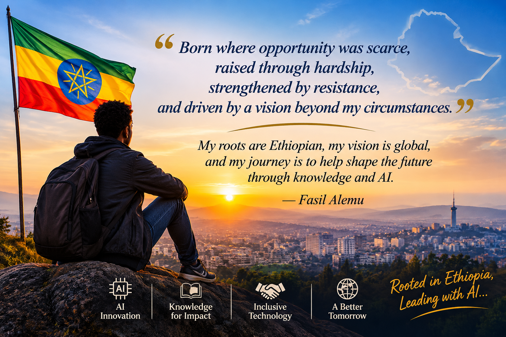

CURRENT
Ph.D. studies in Computer Science
Research focus: multimodal artificial intelligence, missing-modality learning, and healthcare applications. Add your university, department, and expected completion date.
ACADEMIA · RESEARCH · TECHNOLOGY
Computer Science Academic | AI Researcher
Exploring artificial intelligence, language technologies, and multimodal learning to address meaningful challenges in resource-constrained settings.
01 / ABOUT

I am a Computer Science academic and researcher interested in developing AI methods that are useful, inclusive, and grounded in real-world contexts.
I have a background in Computer Science and university-level teaching. My academic interests include natural language processing, multilingual AI, multimodal learning, and socially grounded intelligent systems.
My research particularly considers challenges in low-resource African languages and resource-constrained settings, including applications relevant to healthcare.
02 / EDUCATION & EXPERIENCE
Research focus: multimodal artificial intelligence, missing-modality learning, and healthcare applications. Add your university, department, and expected completion date.
Woldia University, Ethiopia. Teaching undergraduate Computer Science courses and contributing to academic activities.
University of Gondar, Ethiopia. 2022 and NLP related.
University of Gondar, Ethiopia. 2017.
03 / RESEARCH
Research themes that guide my academic work and ongoing investigations.
Language understanding and processing, with particular attention to Amharic and other low-resource African languages.
NLP · Language AILearning from heterogeneous data and developing robust approaches when modalities are incomplete or unavailable.
Multimodal learningInvestigating responsible AI approaches for maternal and child healthcare research and clinical data applications.
Healthcare AIUnderstanding how language, context, people, and societal needs should shape intelligent systems.
Responsible AI04 / PUBLICATIONS
05 / TEACHING
I value clear explanations, practical examples, and helping learners build strong foundations in computing.
COURSES TAUGHT
06 / PROJECTS
Replace or supplement these entries with public repositories and project pages.
Experiments with Word2Vec and GloVe representations for Amharic named entity recognition using a BiLSTM-CRF model.
Explore GitHub profile ↗Research direction investigating heterogeneous clinical data, missing modalities, and robust multimodal learning.
Research directionA web platform concept for academic profiles, collaboration, discussions, and knowledge sharing.
In development07 / SKILLS
08 / CONTACT
For research discussions, academic collaboration, and professional inquiries, feel free to get in touch.